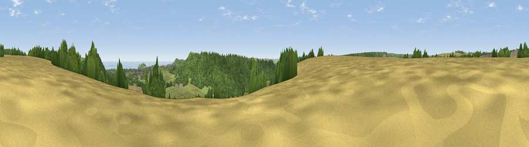

Viewpoint near Hackness
#18010 in England · top 37% of its area beats it · near HacknessThe view, rendered

A 360° render of this exact spot computed from the terrain model, tree cover and land cover — summer colours, afternoon light, calibrated against photographs of famous viewpoints. Real trees, hedges and buildings will differ in detail.
The panorama
Grey silhouette: terrain skyline in each direction (720 bearings, Earth curvature and refraction included). Dashed green: skyline with trees (+15 m) and buildings (+8 m) as obstacles. Blue strip: how far the ground is visible on each bearing.
Where the view opens
Wedge length = distance to the farthest visible ground on that bearing (vegetation-aware). Rings at 10, 25 and 50 km.
What fills the view
56% grassland · 31% woodland · 10% cropland · 2% water · 1% built-up
Angular shares of the visible panorama (visual magnitude), not map area. Landscape diversity 0.46 (0–1 Shannon).
Key numbers
More beautiful places nearby
The staircase of upgrades: each row has a higher view potential than everything closer. Driving times are estimates from straight-line distance, calibrated against real road routing — check an actual route before setting out.
| Place | Direction | Drive | Score |
|---|---|---|---|
| Viewpoint near Hackness | SSW · 0 km | ~1 min | 57.6 |
| Viewpoint near Scalby | ENE · 1 km | ~3 min | 73.4 |
| Viewpoint near Burniston | N · 2 km | ~6 min | 78.3 |
| Olivers Mount | ESE · 6 km | ~13 min | 80.3 |
| Viewpoint near Ravenscar | N · 11 km | ~21 min | 82.7 |
| Viewpoint near Ravenscar | N · 12 km | ~22 min | 87.3 |
| Viewpoint near Ravenscar | N · 13 km | ~23 min | 90.0 |
| Viewpoint near Easington | NW · 39 km | ~58 min | 90.2 |
54.29494, -0.48233 · source: screening · position refined by local search. Computed location — check access rights before visiting.